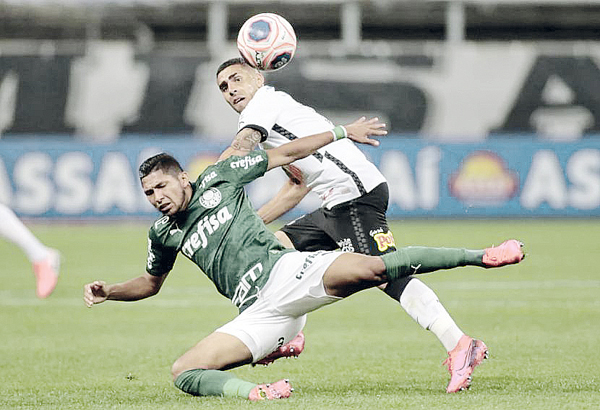
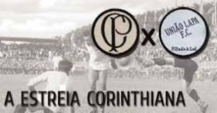
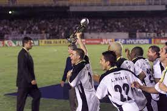
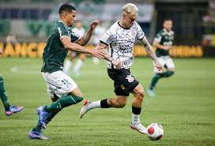

Derby
Derby Um dos maiores clássicos do futebol brasileiro e eleito pela CNN como o 9° (nono) de maior rivalidade no mundo. É conhecido como Derby Paulista. O confronto teve inicio em 1917 e, na época, o Palmeiras se chamava Palestra Itália. Jogos: 378, 134 vitórias do Palmeiras, 129 vitórias do Corinthians e 115 empates.O time alviverde já balançou as redes 541 vezes e sofreu 494 gols.

Localização Neo Química Arena
Aqui abaixo está o mapa:
Primeiro Confronto do Corinthians
Fundado no dia 1º de setembro de 1910, por cinco trabalhadores do bairro do Bom Retiro, o Corinthians fez a sua estreia apenas nove dias depois, em 10 de setembro. A partida inicial foi contra o União da Lapa, equipe fundada na mesma data do Timão. Assim, o jogo marcou a inauguração de ambos os clubes em campo. 
Primeiro Mundial
No início dos anos 2000, o Corinthians escreveu um dos capítulos mais importantes de sua história: em 14 de janeiro daquele ano, o Timão venceu o Vasco, nos pênaltis, para conquistar o título do Mundial de Clubes da Fifa pela primeira vez.

Matérias do Derby
Corinthians x Palmeiras: veja as maiores goleadas do ‘Dérbi Paulista’
CLICK AQUI  Vídeo
Hino Do Corinthians